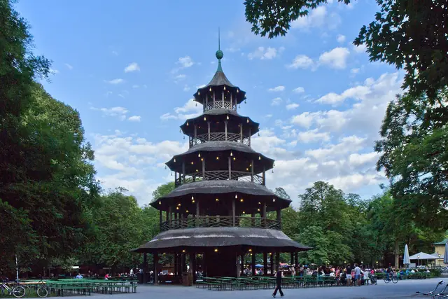
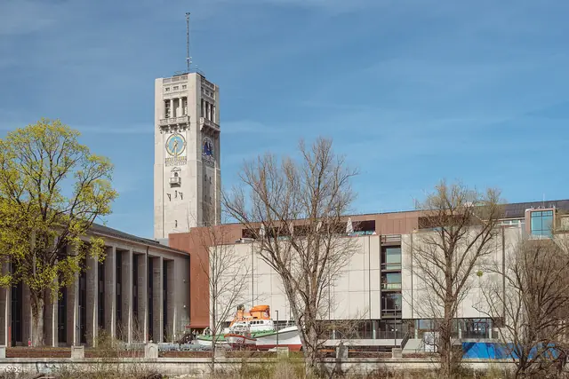
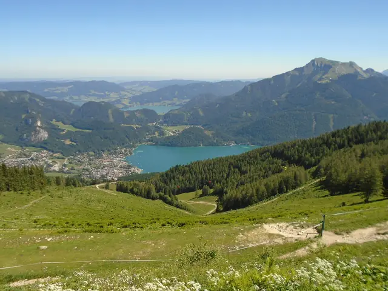

Legoland · Allgäu · Abtenauמסלול A2 · שלוש לינות, חזרה מ-MUC
① Legoland Feriendorf · 18–20.8 (2 לילות) ② Center Parcs Park Allgäu · 20–23.8 (3 לילות) ③ Abtenau · 23–27.8 (4 לילות) → טיסה חזרה מ-MUC יום המעבר הארוך: CP → Abtenau, 3:32 (שני 23.8).
עד ההמראה, 18.8.2027
–ימים
–שעות
–דקות
סטטוס: המסלול (A2 מול B) עוד לא אושר סופית · לא הוזמן כלום ולא נוצר קשר עם אף גורם · רוב המחירים הם מחירי 2026 או הערכות; ל-Center Parcs יש מחיר חי (19.10.2026). שעות הטיסה ומחיר הטיסות ל-2027 עדיין חסרים.
מקרא:מאומת מקור רשמי, לרוב מחיר 2026 (✅ במקור)הערכה חישוב או הנחה (~ במקור)לבדוק לא ודאי / סותר (❓ במקור)חסר אין מידע במקורות
ההמלצה
A2, בתנאי ש-CP מאשר הגעה בשישי 20.8 ומחיר סביר. זה המסלול עם הכי הרבה נופים, יום ההחלפה ב-CP רגיל (שישי–שני), והמעבר הארוך יוצא ביום שני בלי עומס סופ"ש. B עדיף אם Europa-Park חשוב לבן יותר מהאלפים, או אם רוצים מעברים קצרים יותר (ראו חלופות). העלות קרובה (~28,100–29,200 ₪ בבסיס, מתחת ל-30,000).
Legoland · 18–20.8
Legoland Feriendorf, 2 לילות. יום מלא בפארק + בוקר נוסף (כרטיס יומיים).
Center Parcs Allgäu · 20–23.8
3 לילות. Aqua Mundo, Wurzacher Ried, Neuschwanstein + Alpsee (Tegelberg רק אם מותר).
הצעד הבא: מחיר חי ב-Legoland Feriendorf, זמינות Wieser (דורש פנייה) ובדיקת שעות טיסה.
נהיגה: זמני OSRM בלי פקקים; בסופ"ש ובאוגוסט מוסיפים 30–40% הערכה. סה"כ ~1,285 ק"מ, ~16.4 שעות הערכה. חלונות שינה הערכה: תינוק 09:00–10:30 ו-13:30–15:00, הבת נחה 13:00–15:00, שינת לילה 19:00.
~29,200 ₪בסיס כולל טיסות, שער 4.0 הערכה · בשער 3.5: ~26,400
~35,500 ₪תרחיש יקר הערכה (טיסות 9,500: ~38,000) · מעל התקרה
3:32יום הנהיגה הארוך (ב' 23.8, ~4:30 עם עצירות) · ביום הטיסה 2:19
מפה אינטראקטיבית
שלוש הלינות, האטרקציות והשבילים במסלול A2, בצבע לפי יום. לחצו על יום כדי לסנן, על סימון לפרטים וניווט. קווי הכביש להמחשה בלבד (OSRM); זמני הנסיעה המוצגים הם מהמקורות (OSRM, בלי פקקים).
עלות יום = לינת אותו לילה + כרטיסים + חניה + דלק + אוכל (~€105 ליום) הערכה, בלי רכב וטיסות (הם בטבלת התקציב). ₪ בשער 4.0. חלופות גשם מוצגות רק בימים שיש להם חלופה במקור.
איסוף ואן, קניות, צ'ק-אין. בלי פארק ביום הנחיתה. ערב רגוע.
שינה: תנומה בנסיעה. לילה 19:00.
שעת הנחיתה: לא ידועה לבדוק. בדוח קודם צוינה טיסת לופטהנזה שיוצאת מת"א ב-17:05, כלומר נחיתה ~20:30 לבדוק. אם זה כך, החלופה כנראה תידרש.
גשם: לא רלוונטי.
עלות יום: ~€585 (~2,340 ₪) הערכה. חצי מחבילת Legoland.
חלופה לנחיתה מאוחרת (אחרי ~16:00): לא נוסעים בערב עם תינוק. ישנים ליד השדה ב-Aparthotel Sebastian, Erding, דירה ל-5, €194 ללילה מאומת (שנה לא צוינה), ~15 דק' מהשדה. בחמישי Erding→Legoland 1:29, פארק מ-~11:00. שישי בבוקר פארק, ואז 68 דק' ל-CP. Legoland נשאר לילה אחד. חיסכון ~€136 (~540 ₪) הערכה, אם המחיר של חבילת לילה אחד באמת נמוך יותר לבדוק. נחיתה עד ~13:00: נוסעים ישר ל-Legoland (1:19).
Tegelbergbahn: משפחה €73 + פיקדון מאומת 2026. כלל "לא מעלים ילדים מתחת לגיל 3"לבדוק: אם הוא חל על הרכבל, התינוק לא עולה. אז הורה אחד עולה עם הבן, והשני נשאר עם הקטנות.
לבחור 2 מתוך 3. יום כבד. Pöllatschlucht סגור מאומת.
שינה: תינוק בנסיעה בבוקר, צהריים בנסיעה חזרה.
גשם: Museum der Bayerischen Könige לבדוק או Aqua Mundo. בגשם לא עולים ב-Tegelberg. אפשר להחליף עם שבת.
חובה: ויניטה אוסטרית דיגיטלית ל-10 ימים (€12.80 מאומת 2026) ודמי גבול לרכב שכור (~€30).
אחה"צ: Zwergenwald ב-Abtenau, 6 דק', ~2 ק"מ, מתאים לעגלה מאומת.
שינה: תנומת בוקר בנסיעה. תנומת צהריים בבית.
לינה ב-Abtenau, 4 לילות (23–27.8): כל האפשרויות לבדיקהלבדוק. הזמינות לא אומתה, לא נוצר קשר ולא הוזמן כלום. מומלץ: Biohof Haus Wieser, ~€528 ל-4 לילות; גיבוי: Frieda's Platzl (€894). פרטים
לכל אטרקציה במסלול A2 יש מדריך: לחצו על "מדריך מלא" בכרטיס, על כפתור האטרקציה בתוך היום במסלול, או על "מדריך האטרקציה" בחלון המפה. המדריכים המפורטים (Zwergenwald, Gosausee, Golling, Hellbrunn, Haus der Natur, Königssee, זלצבורג) הם מ-attractions_guide.md. ל-Legoland, Center Parcs, Wurzacher Ried, Neuschwanstein, Tegelberg ו-Untersberg אין כרטיס במדריך, ולכן הפרטים מ-final_routes_A2_B.md בלבד, ומה שחסר מסומן חסר.
מאומתמחירון או אתר רשמי, לפי קובצי המקור (לרוב 2026)
הערכההערכה
לבדוקצריך לוודא לפני הנסיעה
חסראין מידע בחומר שנאסף
מהרשתנוסף מהרשת ב-18.10.2026 עם קישור. לא אומת לאוגוסט 2027 ולא נבדק בשטח
רעיוןרעיון של מכין המדריך (טיפים לילדים, סדר ביקור). לא עובדה מהמקורות
רוב המחירים הם מחירי 2026. במדריכים מ-attractions_guide.md ההמרה לשקלים היא בשער 3.5; בתקציב ובמסלול השער הוא 4.0, כמו ב-final_routes_A2_B.md.
ה' 19.8 + ו' 20.8 בבוקר
Legoland Deutschland Legoland Deutschland
💶 חבילה ~€920 הערכה
🚼 עגלה: לא צויןחסר
חבילת 2 לילות + כרטיס יומיים ל-4 + ארוחת בוקר; מקורות סותרים €600–1,300 לבדוק
בן 6Junior Fahrschule, Fire Dragon (110 ס"מ / גיל 6) מאומת
מדריכים מהתוכנית הקודמת שנשארו זמינים לעיון. הם לא חלק מהמסלול, מהמפה או מהתקציב של A2.
גן החיות Hellabrunn
מינכן. במסלול A2 אין בסיס במינכן.
Englischer Garten
מינכן. במסלול A2 אין בסיס במינכן.
Deutsches Museum + Kinderreich
מינכן. במסלול A2 אין בסיס במינכן.
עצירה בדרך: Chiemsee / Prien
עצירה בדרך מינכן–Abtenau שלא קיימת ב-A2.
רכבל Zwölferhorn, St. Gilgen (Wolfgangsee)
St. Gilgen, ~62 דק' מ-Abtenau. לא מופיע ב-final_routes_A2_B.md.
גלריה
תמונות להמחשה מ-Wikimedia Commons (צולמו בעונות שונות; לא תמיד באוגוסט). הקרדיטים המלאים בסוף הדף. ל-Zwergenwald, Tegelberg ו-Biohof Wieser לא נמצאה תמונה מתאימה.
טירת NeuschwansteinAlpsee, SchwangauLegoland Deutschland – MinilandCenter Parcs Park AllgäuAqua Mundo, Center Parcs AllgäuWurzacher Ried, Bad WurzachAbtenauGosauseeBluntauseen, Gollingמפל GollingerKönigssee – ספינה חשמליתKönigssee – St. Bartholomäרכבל Untersbergגני Mirabell, זלצבורגארמון HellbrunnHaus der Natur, זלצבורגזלצבורג – העיר העתיקה
דולגנו ולמה
מקומות שנבדקו ולא נכנסו לתוכנית, עם הסיבה (מ-attractions_guide.md). אם משהו מהם חשוב לכם, אפשר להחזיר אותו אחרי בדיקה.
Liechtensteinklamm
~440 מדרגות לכל כיוון, אין עגלה, מתאים לגיל בית ספר
מכרה המלח Hallein
ילדים מתחת לגיל 4 לא נכנסים. הבת לא תיכנס
מכרה המלח Berchtesgaden
אסור עגלה ונשיאה על הגב. מנשא בד: מקורות סותרים לבדוק. 12°C בפנים
Salzburg Card / SalzburgerLand Card
לא משתלם (€258 מול ~€175 כניסות). הבת לא זכאית
Hallstatt
"צפוף", Gosau לא נופל ממנה (בלוג ישראלי)
תיאטרון הבובות של זלצבורג
מגיל 6–8, מ-€40 לכרטיס, לא לבת
גן החיות של זלצבורג
אופציה ליד Hellbrunn (€39.5)
Salzachöfen (Golling)
מדרגות, לא לעגלה, מגיל ~4–5
מגלשת Karkogel, Abtenau
מצב לא ברור (מקורות סותרים, ייתכן שסגורה) לבדוק
שימו לב: במדריך האטרקציות Neuschwanstein (פנים), Legoland ו-Untersberg/Predigtstuhl מופיעים ברשימת "דילגנו" של התוכנית הקודמת. במסלול A2 הם כן בתוכנית, ולכן הוצאו מכאן. במדריך כתוב שבטירה "אסור עגלה ומנשא", וב-A2 כתוב "עגלה/מנשא בפנים לבדוק (מקורות סותרים)".
תקציב מסלול A2
המקור מחשב בשער €1 = 4.0 ₪ (כמו בדוחות המקור; בשער 3.5 הסכומים נמוכים בכ-10%). בסיס כולל טיסות: ~29,200 ₪, מתחת לתקרה של 30,000 ₪, אבל עם מרווח קטן. בתרחיש היקר עוברים את התקרה.
–₪ סה"כ משוער
030,000 ₪ (תקרה)
4.0 = השער של final_routes_A2_B.md · 3.5 = לפי המקור, הסכומים נמוכים בכ-10% (בנק ישראל 16.10.26: 3.477, מהדוח הקודם).
תוספות וחיסכון (אופציונלי)
פירוט
30,000
החישוב משחזר את מספרי המקור: בסיס 4.0 = ~29,200 · בסיס 3.5 = ~26,400 · זול = ~27,500 · יקר = ~35,500 · יקר + טיסות 9,500 = ~38,000. הכול הערכה. ההפרש בין השורות בטבלת המקור לחישוב קטן מ-50 ₪ (עיגול).
מאומת מחירון 2027. זמינות לבדוק (צריך פנייה), תוספת על פחות מ-6 לילות לבדוק
ואן + 3 מושבים (+ גבול €30 וויניטה €13)
1,113
4,452
3,896
הערכה (ויניטה מאומת 2026)
דלק (€0.15 לק"מ, 1,285 ק"מ)
193
772
676
הערכה
אוכל
1,050
4,200
3,675
הערכה
כרטיסים + חניות
414
1,656
1,449
רוב המחירים מאומת 2026, Untersberg מאומת 2027
שונות
50
200
175
הערכה
סה"כ בלי טיסות
~5,538
~22,150
~19,380
טיסות RT MUC ל-5
7,035
7,035
הערכה Google Flights. במחיר החי של לופטהנזה 07:00 (₪7,680) מוסיפים ~650 ₪
סה"כ בסיס כולל טיסות
~29,200
~26,400
מתחת ל-30,000
תרחיש
A2 (₪)
הנחה
זול
~27,500
Legoland €600, אוכל €950. CP במחיר החי
בסיס
~29,200
הטבלה למעלה
יקר
~35,500
לינה ×1.4, רכב ×1.3, אוכל ×1.2 (אותם כללים כמו בדוחות הקודמים) · ⚠️ מעל התקרה
יקר + טיסות 9,500
~38,000
טווח הטיסות העליון בדוח הקודם · ⚠️ מעל התקרה
חלופת Erding בלילה הראשון
~540–
הערכה (Erding €194 במקום לילה ב-Feriendorf)
Abtenau בגיבוי Frieda's Platzl
~1,460+
€894 במקום ~€528 לבדוק
יציאה מ-SZG
~1,020+
טיסות +819, one-way ~€75 לבדוק, פחות דלק
הערות מהמקור
עדכון 19.10.2026: CP עודכן למחיר חי (+€145 לעומת ההערכה, ~+580 ₪). Abtenau נשאר Wieser ~€528 (מחירון 2027), עם גיבוי Frieda's Platzl. בתרחיש היקר ההפרש נוסף בלי מכפיל. הטיסות נשארו 7,035 ₪.
car_lodging (סעיף 7.5) חישב A2 כ-20,930 ₪ בלי טיסות, עם Legoland €600 ואוכל €950. כאן Legoland €920 ואוכל €1,050 (לפי new_routes_report), כי חדר ב-Feriendorf הוא בלי מטבח.
את ההחלטה יקבעו המחירים האמיתיים של Legoland וזמינות CP ו-Abtenau, לא המסלול עצמו.
חיסכון אפשרי: לוותר על Tegelberg (−€79). להביא מושבי בטיחות מהארץ (−€100–150 הערכה).
לוח זמנים להזמנות
רק תכנון: כלום לא הוזמן ולא נוצר קשר. הסטטוס נשמר בדפדפן הזה בלבד. הרשימה חדשה למסלול A2, וסימונים מהגרסה הקודמת לא הועברו.
עכשיו – נובמבר 2026
להחליט על מסלול (A2 מול B)
לבדוק מחיר חי ב-CP ל-20–23.8 (A2). ימי ההגעה קובעים את המסלול. ל-A2 כבר יש מחיר חי (€1,143, 19.10.2026) מאומת.
עכשיו – דצמבר 2026
Legoland Feriendorf, עם ביטול חינם
2027 פתוח להזמנה מאומת. מחיר חי לחבילה: לבדוק (מקורות €600–1,300). לברר: חניה כלולה? מיטת תינוק (~€10) לבדוק.
עכשיו – דצמבר 2026
Abtenau, 4 לילות (23–27.8): Wieser, או בגיבוי Frieda's Platzl
Wieser: אין לוח זמינות, צריך פנייה, ותוספת על פחות מ-6 לילות לבדוק. גיבוי: Frieda's Platzl, €894 עם ביטול חינם ב-Booking.com לבדוק.
ברגע שנפתחות
טיסות TLV–MUC ישירות, עריסה לתינוק
להעדיף נחיתה עד ~13:00 וחזרה אחרי ~12:00. השעות קובעות את חלופת Erding ואת שעת היציאה ב-27.8.
עד 22.4.2027
Center Parcs Allgäu, 20–23.8 (Comfort 6P)
הנחת 20% + €30 קרדיט, להזמנה ≥120 יום מראש מאומת (תנאי 2026). שינוי חינם פעם אחת עד 21 יום לפני מאומת.
ינואר – מרץ 2027
ואן 8–9 מקומות, MUC→MUC, ביטול חינם
3 מושבי בטיחות. אישור כניסה לאוסטריה ודמי גבול (~€30).
כשנפתחת המכירה לבדוק
Neuschwanstein, כרטיס לשעה
אונליין בלבד, נגמר מוקדם בעונה מאומת. כרטיס חינם לילדים +€2.50 מאומת.
יולי – אוגוסט 2027
ויניטה דיגיטלית ל-10 ימים + Legoland אונליין אם לא בחבילה
הוויניטה אחרי שידוע מספר הרכב, תוקף מ-23.8 מאומת. Untersberg ו-Königssee: קונים באותו יום לפי מזג האוויר.
לא להזמין מראש
Untersberg, Königssee: קונים באותו יום לפי מזג האוויר · Mirabell (חינם) · Hellbrunn ו-Haus der Natur (ימי גשם) · מפל Golling ו-Bluntau (במקום) · חניית Gosausee.
רשימת ציוד
הסימונים נשמרים בדפדפן הזה (localStorage) בלבד.
תינוק
ילדים
הליכה ורחצה
פרטים מעשיים
לינה
① Legoland Feriendorf · 18–20.8, 2 לילות
חדר בלי מטבח מאומת, ארוחת בוקר בחבילה הערכה
חבילה עם כרטיס יומיים ל-4: ~€920 הערכה, מקורות סותרים €600–1,300 לבדוק
התינוק (מתחת ל-2) חינם בפארק מאומת, הבת בת 3 משלמת מאומת
חניה כלולה? מחיר מיטת תינוק (~€10, מקור משני) לבדוק
② Center Parcs Park Allgäu · 20–23.8, 3 לילות, Comfort 6P
מחיר חי: €1,143 אחרי 20% הנחת הזמנה מוקדמת (להזמין עד ~22.4.2027) + מס תיירות ~€27 מאומת. לא הוזמן.
מצעים ומגבות לא כלולים (~€100) הערכה
פארק בלי מכוניות; הרכב נכנס רק להורדת מזוודות מאומת
מתקנים מ-10:00, בית מוכן מ-16:00, צ'ק-אאוט 10:00, צ'ק-אין 24/7 מאומת
Aqua Mundo ו-Baluba כלולים מאומת. מיטת תינוק וכיסא אוכל בבית Comfort מאומת
③ Abtenau, 4 לילות (23–27.8): כל האפשרויות לבדיקהלבדוק
ויניטה אוסטרית דיגיטלית ל-10 ימים: €12.80 מאומת 2026. קונים אחרי שידוע מספר הרכב, תוקף מ-23.8.
ראשון 22.8: חנויות סגורות בגרמניה ובאוסטריה מאומת. קונים אוכל וחיתולים בשבת.
A8 עמוס בשישי אחה"צ מאומת ADAC. בראשון אחה"צ גל חזרה מאומת ADAC.
זמני OSRM בלי פקקים. בסופ"ש ובאוגוסט מוסיפים 30–40% הערכה.
זמני נסיעה (OSRM, בלי פקקים)
MUC → Legoland
133 ק"מ · 1:19
MUC → Erding (חלופה) → Legoland
~15 דק' · 1:29
Legoland → Center Parcs
105 ק"מ · 1:08
CP → Bad Wurzach
24 ק"מ · 25 דק'
CP → Hohenschwangau P4
73 ק"מ · 67 דק'
CP → Abtenau
325 ק"מ · 3:32 (~4:30 עם עצירות)
Abtenau → Zwergenwald
6 דק'
Abtenau → Gosausee
22 דק'
Abtenau → Bluntau
~29 דק' הערכה
Abtenau → Hellbrunn
35 דק'
Abtenau → Königssee
50 דק'
Abtenau → Untersberg
35 דק' (משם לזלצבורג ~20 הערכה, חזרה 46)
Abtenau → Predigtstuhl
50 דק'
Abtenau → MUC
220 ק"מ · 2:19 (בשישי עד ~3 שעות הערכה)
Abtenau → Oberding (ליד MUC)
2:32
Abtenau → SZG
0:42
סה"כ ~1,285 ק"מ, ~16.4 שעות הערכה. יום מקסימלי 3:32 (ב' 23.8).
יום הטיסה ונחיתה מאוחרת
שעת יציאה מהבסיס = שעת הטיסה פחות ~6 שעותהערכה (נסיעה, עצירות, החזרת רכב ~30 דק', שדה ~3 שעות).
טיסה אחרי ~13:00: יוצאים מ-Abtenau ~07:00. טיסה לפני ~11:00: לילה אחרון ליד MUC לבדוק.
נחיתה אחרי ~16:00: לא נוסעים בערב עם תינוק, ישנים ב-Erding (ראו לינה). נחיתה עד ~13:00: ישר ל-Legoland.
שעות הטיסה בפועל: חסר
שבילים קלים (עגלה / מנשא)
מקום
אורך
עגלה
Torflehrpfad, Wurzacher Ried
~1.5 ק"מ
עגלת שטח או מנשא
Alpsee Rundweg
5.2 ק"מ
לא – מנשא בלבד
Kinderwagenrunde (מחניון Tegelberg)
7 ק"מ
כן
Zwergenwald, Abtenau
~2 ק"מ
כן
Gosausee (קדמי)
4.5 ק"מ
צד שמאל
Bluntau
~4 ק"מ
כן
מפל Gollinger
–
לא – מנשא
St. Bartholomä
~1 ק"מ
מתקפלת בלבד
Untersberg → Geiereck
5 דק' הליכה
עגלה בקבינה לבדוק
שינה ויום-יום
שינה הערכה: תינוק 09:00–10:30 ו-13:30–15:00. הבת נחה 13:00–15:00. שינת לילה 19:00.
3 החלפות לינה עם תינוק. נוסעים בזמן תנומת הבוקר.
בתא המטען כל הזמן: ציוד גשם ובגדי ים.
שאלות פתוחות וחסרים
מה צריך לברר לפני הזמנה (סעיף 7 במקור, ופרטים שסומנו ❓ במסלול). סמנו כשנסגר; נשמר בדפדפן הזה בלבד.
חלופות (בקצרה)
מסלול B: Legoland (2) → Titisee (4) → Center Parcs (3) → MUC
דגש: Europa-Park ויער שחור, רכבלים נוחים לעגלה (Feldberg, Schauinsland). בלי אוסטריה: בלי ויניטה ובלי דמי גבול (לבדוק שהדרך Titisee→CP לא עוברת בשווייץ לבדוק).
יום המעבר הארוך: Legoland→Titisee 2:45 (שישי בבוקר). ביום הטיסה CP→MUC 1:52.
תקציב: בסיס ~28,100 ₪ כולל טיסות (זול ב-~1,100 ₪ הערכה); יקר ~34,100 (טיסות 9,500: ~36,500).
החיסרון המרכזי: הגעה ל-CP ביום שלישי לא מובטחת לבדוק. אם אי אפשר: B' – Titisee 3 לילות (שישי–שני) ו-CP 4 לילות (שני–שישי); Europa-Park עובר לסופ"ש (עמוס) או יורד, ו-CP עולה בלילה אחד (~€336+).
גם: Legoland יום אחד בלבד (ובחלופת Erding רק חצי יום), יום Europa-Park ארוך, נוף פחות דרמטי הערכה.
B עדיף אם Europa-Park חשוב לבן יותר מהאלפים, או אם רוצים מעברים קצרים יותר.
A2 – יתרונות וחסרונות
➕ הכי הרבה נוף אלפיני: Neuschwanstein, Alpsee, Gosausee, Königssee, Untersberg, זלצבורג
➕ CP שישי–שני = יום החלפה רגיל, סביר יותר שאפשר להזמין
➕ המעבר הארוך ביום שני, בלי עומס סופ"ש · Abtenau זול ומחיר 2027 מאומת · Legoland: יום מלא + בוקר
➖ יום של 3:32 (~4:30 עם עצירות) עם ילדה בת 3 ותינוק · 2:19 ביום הטיסה (~3 שעות בשישי) · Neuschwanstein ביום ראשון (עמוס)
בשני המסלולים: 3 החלפות לינה עם תינוק. Tegelberg לא ודאי. מחיר Legoland לאוגוסט 2027 לא ידוע.
השוואה יום ליום (₪ עלות יום, שער 4.0)
בנייד אפשר לגלול את הטבלה הצידה ←
יום
A2: מקום / פעילות
נסיעה
עלות
B: מקום / פעילות
נסיעה
עלות
ד' 18.8
MUC→Legoland Feriendorf (או Erding)
1:19
~2,340
MUC→Legoland Feriendorf (או Erding)
1:19
~2,340
ה' 19.8
Legoland, יום מלא
0
~2,310
Legoland, יום מלא
0
~2,310
ו' 20.8
Legoland בבוקר, ואז CP
1:08
~2,180
Legoland→Titisee
2:45
~950
ש' 21.8
Wurzacher Ried + Aqua Mundo
0:50
~2,180
Feldbergbahn
0:32
~1,020
א' 22.8
Neuschwanstein + Alpsee (Tegelberg?)
2:12
~2,840
Triberg (או Schauinsland)
1:34
~940
ב' 23.8
CP→Abtenau (Wieser לבדוק) + Zwergenwald
3:32
~1,200
Europa-Park
1:55
~1,800
ג' 24.8
Gosausee + Bluntau (Golling)
~1:42
~1,160
Titisee→CP
2:21
~2,040
ד' 25.8
Königssee
1:40
~1,280
Neuschwanstein + Alpsee (Tegelberg?)
2:12
~2,650
ה' 26.8
Untersberg/Predigtstuhl + זלצבורג
~1:41
~1,460
Wurzacher Ried + Aqua Mundo
0:50
~1,990
ו' 27.8
Abtenau→MUC
2:19
~550
CP→MUC
1:52
~530
סה"כ
~1,285 ק"מ, ~16.4 ש'
~29,200 כולל טיסות
~1,200 ק"מ, ~15.3 ש'
~28,100 כולל טיסות
חלופות נוספות בתוך A2: לילה ראשון ב-Erding (נחיתה מאוחרת), Abtenau בגיבוי Frieda's Platzl, יציאה מ-SZG. כולן בתקציב תחת "תוספות וחיסכון".
קרדיטים ורישיונות
כל התמונות מ-Wikimedia Commons, ברישיונות Creative Commons שמתירים שימוש עם ייחוס. הותאמו לגודל (עד 1200 פיקסלים) ודוחסו ל-WebP. לא נעשה שינוי תוכני.
טירת Neuschwanstein צילום: Ximonic, Simo Räsänen (post-processing) & Tauno Räsänen (photograph) · CC BY-SA 3.0 · Wikimedia Commons טירת Neuschwanstein הלבנה על צוק מיוער, מבט מגשר Marienbrücke
Englischer Garten – Kleinhesseloher See צילום: Rufus46 · CC BY-SA 3.0 · Wikimedia Commons עצים בצבעי סתיו על שפת האגם Kleinhesseloher See ב-Englischer Garten

Englischer Garten – Chinesischer Turm צילום: Sven Teschke · CC BY-SA 3.0 de · Wikimedia Commons המגדל הסיני (Chinesischer Turm) בין העצים ב-Englischer Garten

Deutsches Museum צילום: Flocci Nivis · CC BY 4.0 · Wikimedia Commons בניין Deutsches Museum במינכן עם מגדל השעון

Zwölferhorn, St. Gilgen צילום: Pimlico27 · CC BY-SA 4.0 · Wikimedia Commons נוף מ-Zwölferhorn אל Wolfgangsee ואל העיירה St. Gilgen